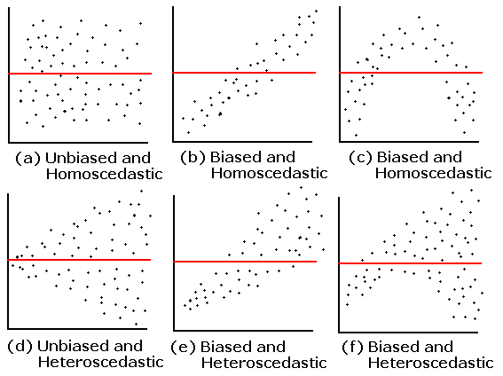
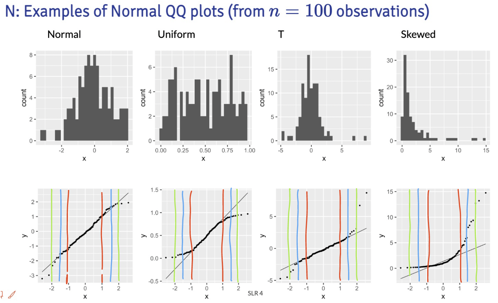
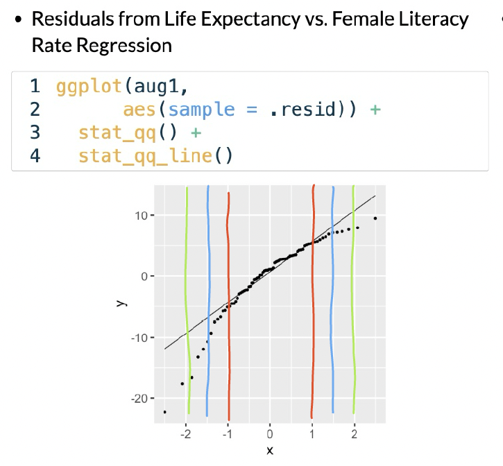

Muddy Points
Lesson 7: Checking model assumptions
Muddy Points from Winter 2025
Muddy Points from Winter 2024
1. Equality of the residuals - what’s the bias refer in a residual plot? Is that suggesting a non linear relationship between two variables?
Here is the plot that this question is referring to:

The answer is already in the question! The residual plot can also be used to look at linearity! The above plots that say “biased” mean they do not follow the linearity assumption.
2. QQ Plot: What is it? And can you explain the axes, meaning of “quantiles”, and why assuming normality would result in a straight line?
I cannot answer this question better than this video! They go through a smaller dataset of gene expression values and how to make a QQ plot from the data. Remember, our QQ plot is of our residual values!!
3. I’m still a little confused on how to determine if a dataset has a normal distribution. Feels like a subjective decision.
First thing that I want to address: when we are talking about normality, we are not determining if the dataset follows a normal distribution. We are determining if the fitted model violates the normality assumption that we need to use in our population model. We do this by seeing if the fitted residuals follow a normal distribution. I just want to draw attention to this. There is very particular language being used here.
Second thing… Yes! These diagnostic tools are somewhat subjective. You are welcome to use the Shapiro-Wilk test every time you look at a QQ plot! I realize a test with a conclusion might feel more objective and comfortable as we are learning about the model diagnostics. I suggest trying to make a conclusion visually with a QQ plot, then see if it matches the Shapiro-Wilk test. Remember, even in the Shapiro-Wilk test, the null hypothesis is that the fitted residuals come from a normal distribution. So we have to work to disprove that. You can come to the QQ plot with that same prior. If the QQ plot gives blantent evidence that the fitted residuals are not normally distributed, then we violate the assumption.
We’ll keep practicing! As we keep going through regression, we’ll realize that model building is very much an art! There is no one answer in statistics!
4. What are the small nuances in interpreting the normality through a QQ plot?
Thanks for this question! This helped me realize that I was not articulating very well some of my more subconscious thoughts in a QQ plot.
Below are the distribution samples ant their QQ plots from lecture:

I drew red, blue and green lines to bracket certain areas of the plots. I basically start by looking within the red brackets. Do all the points seem to stay close to the black line? If this doesn’t hold for the red bracketed area, then I would say our fitted residuals are not normal. Then I look at the area from the red lines to the blue lines. This is less definite, but if the points don’t seem to stay close to the black line, then I’d say our fitted residuals are not normal. Then I’d look at the are between the blue and green line. If the points aren’t close to the black line, then I am likely okay with it and would NOT make the conclusion that the fitted residuals are NOT normal. Notice, that I am not saying I call them normal. They seem to not violate the normal assumption.
Extra note: The t-distribution is similar to a normal, but it includes larger tails. This is to adjust the normal distribution when our sample size of data is small. However, our assumption aims for fitted residuals to follow a normal distribution. We can be a little more flexible with the QQ plot when we have a smaller sample size, but we should not aim for a t-distribution. Both the normal and t-distribution samples “passed” my normality assessment.
We can check out the example:

In this example, I would say that the fitted residuals violate the normal assumption. Notice that we have points off the black line between the red and blue lines. And even within the red lines, we have some curve. This is okay for our example! That’s because we have not yet included other (likely needed) variables in the model. And what does that mean? The other variables in the model will help explain MORE variance in our Y, which would alter the fitted residuals!!
Draw the red, blue, and green lines on the other QQ plot slides. See what you find, especially when we have different sample sizes!